Taariikhda Soomaaliya
Soomaaliya waxay xoriyadeeda ka qaadatay gumaystihii 1-da Luulyo, 1960-kii, waxayna mideysay gobolladii waqooyi iyo koonfur. Waxaa xoriyada qaatay gobollo ay kamid yihiin:
- Banaadir - 1960
- Woqooyi Galbeed (Hargeysa) - 26 Juun 1960
- Bari - 1960
- Hiiraan - 1960
- Gedo - 1960
Bulshada Somalida
Bulshada Soomaaliyeed waa dad Muslimiin ah oo inta badan ku hadla Af-Soomaali. Dadka intooda badan waa dhalinyaro iyo carruur, iyagoo ah bulsho da’ yar. Qaar badan ayaa ku nool magaalooyinka halka qaar kalena ay xoolo dhaqato yihiin. Diinta iyo dhaqanka ayaa door weyn ku leh noloshooda. Sidoo kale, bulshada waxay u qaybsan tahay beelo iyo qabiilo dhaqameedyo kala duwan.
Bulshada somalida waxa lagu qiyaasa 21-23milyan.
1.caruur:
Carruurta Soomaaliyeed waa qayb muhiim ah bulshada, waxayna matalaan mustaqbalka qoyska iyo qaranka. Intooda badan waxay ku korayaan deegaan ay ku jiraan dhaqanka, diinta iyo afka Soomaaliga. Carruurtu waxay qaataan masuuliyado yar yar sida ilaalinta xoolaha ama ka caawinta guriga, waxayna inta badan helaan tarbiya diin iyo dhaqan si ay u noqdaan dad waxtar leh.
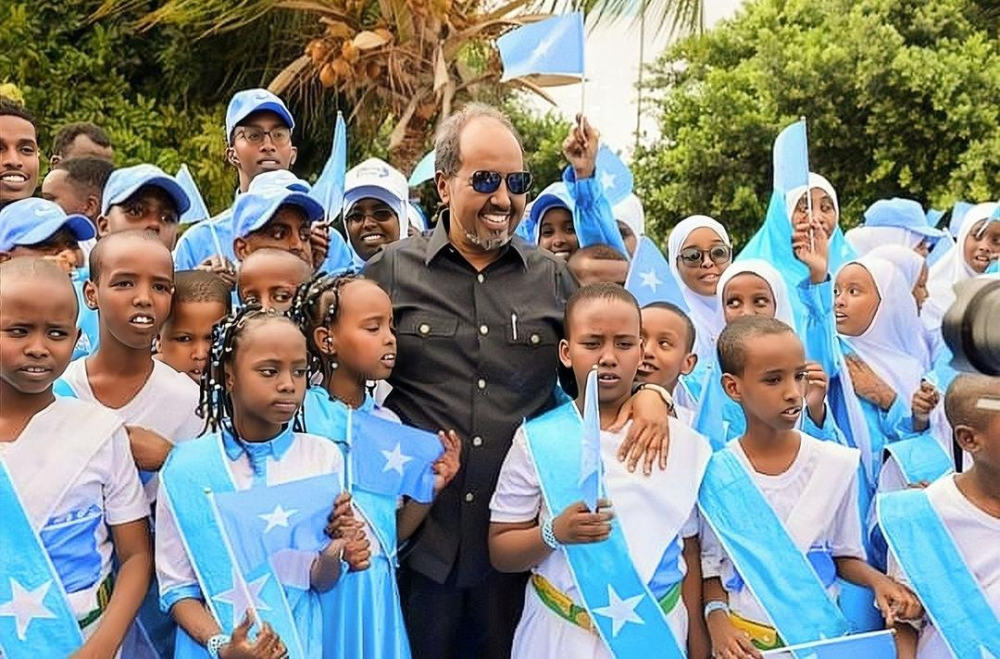2.dumar:
Dumarka Soomaaliyeed waxay door weyn ku leeyihiin tarbiyada caruurta iyo maaraynta guriga. Waxay sidoo kale ka qayb qaataan dhaqdhaqaaqa ganacsi sida iibinta cuntooyinka, dharka iyo alaabaha kale suuqa. Inta badan dumarka waxay yihiin tiirka bulshada iyo isku xirka reerka, waxayna door muuqda ku leeyihiin ilaalinta dhaqanka iyo dhaqaalaha qoyska, iyagoo carruurta baraya akhlaaqda iyo diinta Islaamka.
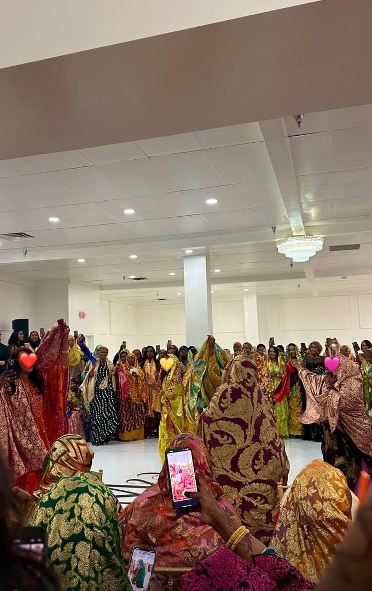3.Nimanka:
Carruurta Soomaaliyeed waa qayb muhiim ah bulshada, waxayna matalaan mustaqbalka qoyska iyo qaranka. Intooda badan waxay ku korayaan deegaan ay ku jiraan dhaqanka, diinta iyo afka Soomaaliga. Carruurtu waxay qaataan masuuliyado yar yar sida ilaalinta xoolaha ama ka caawinta guriga, waxayna inta badan helaan tarbiya diin iyo dhaqan si ay u noqdaan dad waxtar leh.
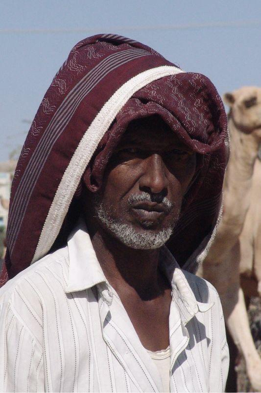Madaxwenayashi somarey Somalia-2025
Somalia wxa so marey 9 madaxweyne
- AADEN CABDULLE OSMAN 1960-1967.
- ABDIRASHID ALI SHARMARKE 1967-1969.
- JAALLE MAXAMED SIYAAD BARRE 1969-1991.
- CALI MAHDI MAXAMED 1991-1997.
- CABDULQAASIM SALAD XASSAN 2000-2004.
- CABDULLAHI YUUSUF AHMED 2004-2008.
- SHEIKH SHARIIF AHMED 2009-2012.
- XASSAN SHEIKH MAXAMUUD 2012-2017.
- MOHAMED ABDULLAHI FARMAAJO 2017-2022.
- XASSAN SHEIKH MAXAMUD 2022-Illaa hadda oo eh 2025.
Madaxweynaha hdda xilka haaye-2025
waa madaxweynahii ugu horeyay ee labo jeer kuso laabtey xilka madaxweynaha Somalia.
2012-2017
2022- hadda 2025.
Reysulwasaarayashi Somalia
- CABDIRASHID CALI SHARMAKE 1960-1964.
- CABDULCASIIS NUUR CIISE 1964-1967.
- MAXAMED XAAJI IBRAHIM CIGAAL 1967-1969.
- CALI KHALIIF GALAYDH 2000-2001.
- NUUR XASSAN XUSSEN 2007-2009.
- CABDIWELI MAXAMED CALI GAAS 2011-2012.
- XASSAN ALI KHEYRE 2017-2020.
- MAXAMED XUSEEN ROOBLE 2020-2022.
- XAMSA CABDI BARRE 2022-illa hda eh 2025.
Qaar kamid eh Raysulwasarashi Somalia:
Calanka Somalia
Calanka Soomaaliya waa astaan muujinaysa midnimada iyo madax-bannaanida dalka. Waxaa la sameeyay 1954-kii, waxaana lagu gartaa midab buluug ah iyo xiddig cad oo shan gees leh. Midabka buluugga ah wuxuu matalaa cirka iyo nabadda, halka xiddigtu ay ka tarjumayso shanta gobol ee Soomaalida. Calankan wuxuu astaan u yahay qaranimada iyo rajooyinka shacabka Soomaaliyeed. Waxaa si weyn loogu isticmaalaa munaasabadaha qaranka iyo xafladaha dalka.
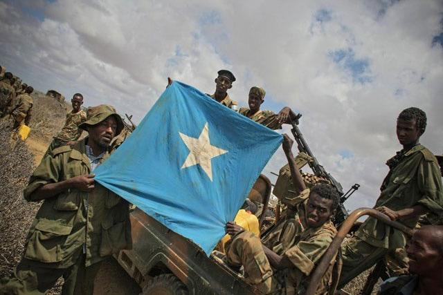Cidamada Somalia
Ciidanka Soomaaliya waa kuwa difaaca dalka iyo ilaalinta amniga gudaha iyo madax-bannaanida Soomaaliya. Waxaa la aasaasay 1960-kii markii dalka uu xoroobay, waxaana ka mid ah Ciidanka Xoogga Dalka, Booliska, iyo Ciidanka Badda iyo Cirka. Ciidamada Soomaaliya waxay door muhiim ah ka qaataan ilaalinta xuduudaha, la dagaalanka argagixisada, iyo ka qeyb qaadashada nabad ilaalinta gudaha. Inkastoo ay jiraan caqabado, ciidamada Soomaaliya waxay si geesinimo leh ugu shaqeeyaan sidii ay u ilaalin lahaayeen amniga iyo midnimada shacabka Soomaaliyeed.
1.Ciidanka Xoogga Dalka Somaliyed
Waa ciidamada milatariga ee dalka, waxayna ka shaqeeyaan difaaca xuduudaha iyo ilaalinta madax-bannaanida Soomaaliya. Waxaa ka mid ah Ciidanka Lugta, Ciidanka Cirka, iyo Ciidanka Badda.
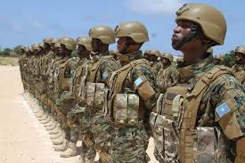2.Ciidanka Booliska Somaliyed
Waxaa loo xil saaray ilaalinta amniga gudaha, sharciga, iyo kala dambeynta bulshada. Waxay qabtaan baaritaannada dambiyada iyo ilaalinta nabadda magaalada iyo degmooyinka.
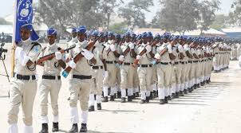3.Ciidanka Asluubta
Waxay ka shaqeeyaan maamulka iyo ilaalinta xabsiyada dalka, ilaalinta xuquuqda maxaabiista, iyo fulinta amarada maxkamadaha.
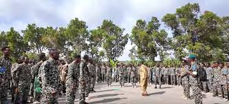4. Ciidanka Nabad Sugidda iyo Sirdoonka Qaranka
Waxay qaabilsan yihiin ururinta xogaha sirdoonka si loo ilaaliyo amniga qaranka iyo la dagaalanka argagixisada iyo dambiyada culus.
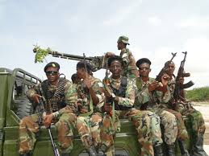Aqoonsiga muwaadinka Somaliga
Muwaadin Soomaaliyeed waxaa lagu gartaa qof haysta dhalashada Soomaaliyeed oo ku dhashay Soomaaliya ama uu waalidkiis yahay Soomaali. Muwaadinka Soomaaliyeed waxa uu leeyahay xuquuq iyo waajibaad uu dalka ku leeyahay, sida xaqa uu u leeyahay inuu dalka ku noolaado, u shaqeysto, wax ku barto iyo inuu ka qeyb qaato horumarinta bulshada iyo ilaalinta dhaqanka iyo diinta. Sidoo kale, muwaadin kastaa waa inuu ilaaliyo sharciga dalka, uu ixtiraamo xuquuqda dadka kale iyo inuu ka qayb qaato nabadda iyo wadajirka bulshada Soomaaliyeed.
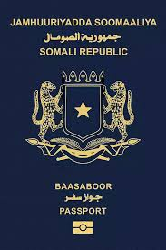Lacagta Somalia
Shilin Somali waa lacagta rasmiga eh ee Somalia.
Shilin Soomaaligu waa lacagta rasmiga ah ee Soomaaliya. Waxaa la bilaabay in la isticmaalo 1962 kadib markii ay Soomaaliya xorriyadda qaadatay. Waxaa lagu qoraa SOS, waxaana loo isticmaalaa in lagu iibsado badeecooyinka iyo adeegyada gudaha dalka. Shilin Soomaaligu wuxuu leeyahay lacag waraaq ah iyo lacag bir ah, waxaana ka mid ah 1,000 Shilin iyo 500 Shilin. Inkastoo dalka uu wajahayo sicir barar iyo dhibaatooyin dhaqaale, Shilin Soomaaligu wuxuu astaan u yahay madax-bannaanida iyo dhaqaalaha Soomaaliya.
Masjidyada Somalia
Soomaaliya waa dal Muslim ah, waxaana ku yaalla kumanaan masaajid oo ku kala yaalla magaalooyinka waaweyn iyo tuulooyinka yaryar. Muqdisho oo ah caasimadda dalka ayaa lagu qiyaasaa inay leedahay in ka badan 1,000 masaajid, halka magaalooyin kale sida Hargeysa, Bosaso, iyo Kismaayo ay iyaguna leeyihiin boqolaal masaajid mid walba. Masaajidyadu waxay yihiin xarumo lagu cibaadeysto, laguna barto diinta Islaamka, sidoo kalena lagu qabto kulamo bulshada dhexdeeda ah. In kasta oo aan jirin tiro rasmi ah oo la diiwaangeliyay, haddana guud ahaan dalka waxaa la qiyaasaa inay ka jiraan 5,000 ilaa 10,000 masaajid. Tiradan ayaa si joogto ah u kordhaysa maadaama masaajidyo cusub la dhisayo sanad walba.
Kani wa mid kamid eh masjidyada ugu caansan Somalia:
Masjid Cali Jimcaale.
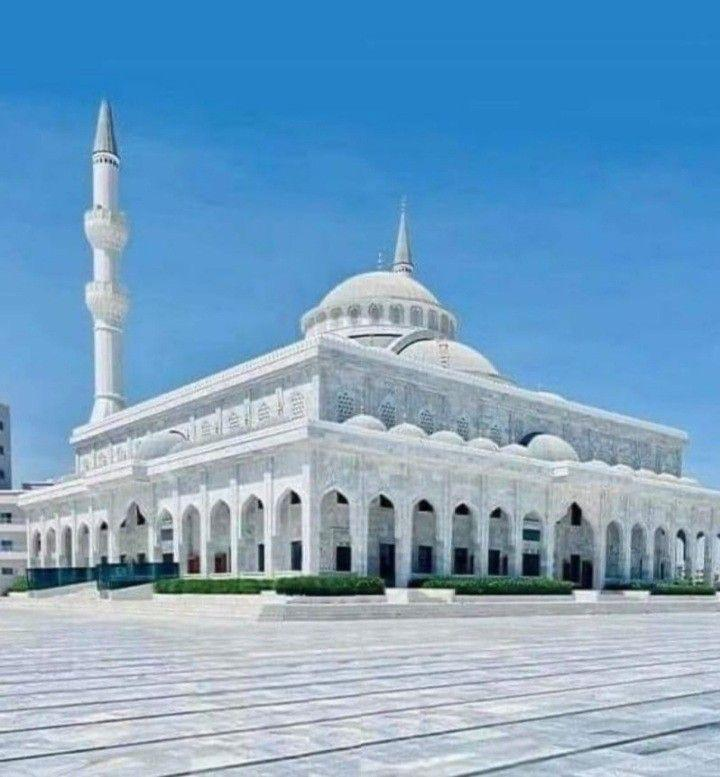Badaha Somalia-Xebaha
Soomaaliya waxay leedahay xeeb dheer oo dhererkeedu yahay ku dhowaad 3,300 km, taasoo ka dhigaysa dalka leh xeebta ugu dheer Afrika.
1.Badweynta Hindiya
Waxay ku fidsan tahay xeebaha Koonfur iyo Bartamaha Soomaaliya. Waxaa laga kaluumaystaa kalluun iyo khayraad kale oo badeed, waxayna muhiim u tahay dhaqaalaha dalka.
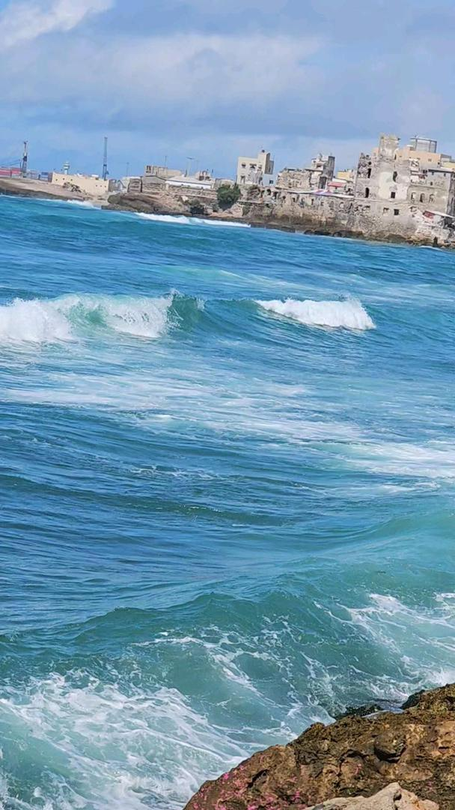2.Badda Cas
Waxay ku taal Waqooyiga Soomaaliya gaar ahaan xeebaha Somaliland. Waxay muhiim u tahay ganacsiga iyo isku xirka dekadaha dalka.
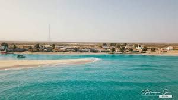Webiyada Somalia
Soomaaliya waxay leedahay labo webi oo waaweyn kuwaas oo muhiim u ah nolosha dadka iyo xoolaha:
1.Webiga Shabelle
Waxa uu ka soo bilaabmaa dalka Itoobiya, wuxuuna dhex mara gobollada Hiiraan, Shabeellaha Dhexe iyo Shabeellaha Hoose. Webigan wuxuu muhiim u yahay waraabka beeraha iyo biyaha dadka ku nool hareerihiisa.
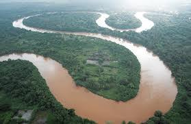2.Webiga Jubba
Waxa uu ka soo bilaabmaa Itoobiya, wuxuuna dhex mara gobollada Gedo, Jubada Dhexe iyo Jubada Hoose, isagoo ku daro Badweynta Hindiya. Waxaa looga faa"iideystaa waraabka iyo biyaha xoolaha, wuxuuna muhiim u yahay beeraha Jubbooyinka.
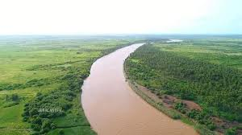Beeraha Somalia
Beeraha Soomaaliya waa qayb muhiim ah oo ka mid ah dhaqaalaha iyo nolosha bulshada. Waxaa laga beeraa dalagyo kala duwan sida galleyda, masagada, iyo khudradda, gaar ahaan hareeraha webiyada Shabeelle iyo Jubba. Beeruhu waxay bixiyaan cunno iyo shaqo dadka, waxayna taageeraan dhaqaalaha iyo nolosha reer miyiga. Inkastoo ay jiraan caqabado sida abaaraha iyo biyo yaraanta, beeraha Soomaaliya waxay muhiim u yihiin horumarka iyo madax-bannaanida cunnada dalka.
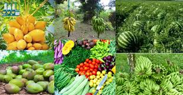Xoolaha Somalia
Xoolaha Soomaaliya waa tiirka ugu weyn ee dhaqaalaha iyo nolosha dadka Soomaaliyeed. Waxaa dalka lagu dhaqdaa geel, lo’, ari iyo ido, kuwaas oo bixiya caano iyo hilib. Geelu waa astaanta dhaqanka Soomaaliyeed, wuxuuna leeyahay qiimo gaar ah. Xooluhu waxay dadka siiyaan cunno iyo dakhli ay ku noolaadaan. Waxaa sidoo kale loo dhoofiyaa suuqyada dibadda si dhaqaalaha loo kobciyo. Dhulka daaqa leh ee Soomaaliya ayaa ka caawiya dadka dhaqashada xoolaha. Xooluhu waxay taageeraan nolosha reer miyiga iyo dhaqanka Soomaalida. Waxay astaan u yihiin hodantinimada iyo adkeysiga shacabka Soomaaliyeed.
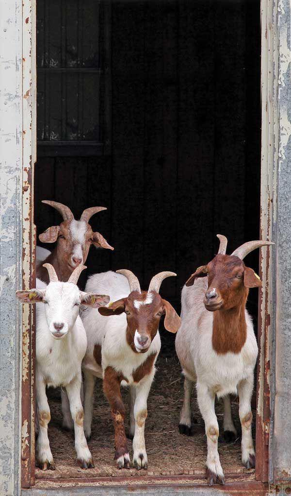Kalluunka
Kalluunka Soomaaliya waa mid ka mid ah khayraadka dabiiciga ah ee muhiimka u ah dalka. Soomaaliya waxay leedahay xeeb dheer oo hodan ku ah kalluun kala duwan. Dad badan ayaa kalluumaysi ku shaqeysta si ay u helaan nolol maalmeed. Kalluunka waxaa laga isticmaalaa gudaha iyo dibadda iyadoo loo dhoofiyo dalal kale. Kalluumaysigu wuxuu kaalin ka qaataa dhaqaalaha iyo shaqo abuurka bulshada. Xeebaha Soomaaliya ayaa leh noocyo kalluun oo qiimo leh sida tuna iyo mackerel. Kalluunka wuxuu dadka siinayaa hilib caafimaad leh iyo nafaqo. Waa khayraad muhiim ah oo ay tahay in si wanaagsan loo ilaaliyo loona horumariyo.
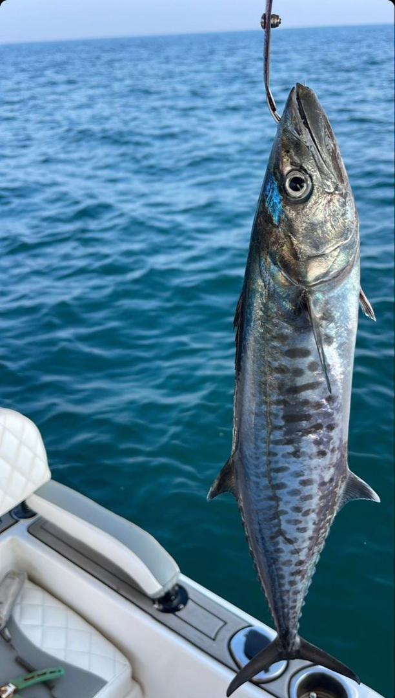Aaden cadde Airport
Aden Cadde Airport waa garoonka diyaaradaha caalamiga ah ee Muqdisho, caasimadda Soomaaliya. Waxaa la dhisay 1928 waxaana markii hore loo yaqaanay Mogadishu Airport. Sanadkii 2007 ayaa loo bixiyay magaca Aden Cadde oo ahaa madaxweynihii ugu horreeyay ee Soomaaliya. Garoonkani wuxuu muhiim u yahay safarka gudaha iyo dibadda dalka, wuxuuna qaabilaa diyaarado kala duwan oo yimaada iyo kuwa ka baxa dalka, isagoo ka qeyb qaata xiriirka iyo dhaqaalaha Soomaaliya.
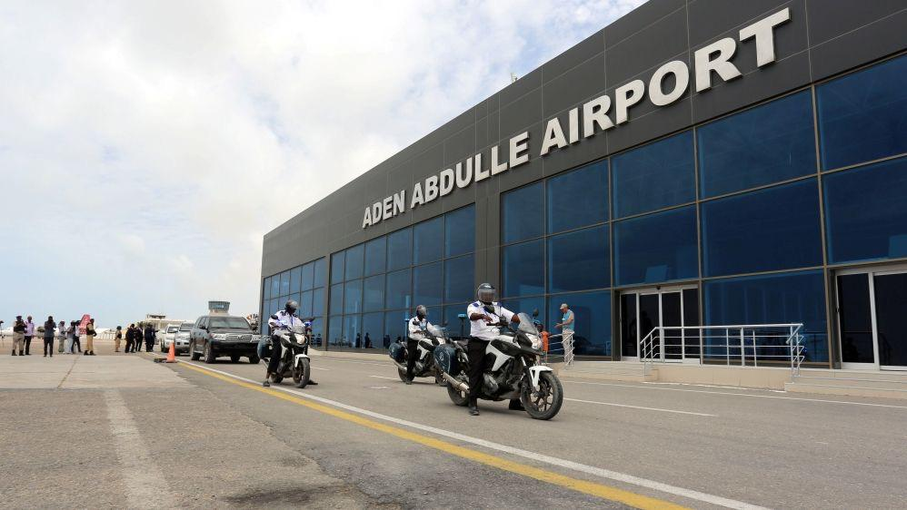Stadium Mogadishu
Stadium-ka ugu weyn Soomaaliya waa Mogadishu Stadium, oo sidoo kale loo yaqaan Stadium Koonis. Waxaa laga dhisay magaalada Muqdisho sanadkii 1977, waxaana uu qaadi karaa in ka badan 35,000 qof. Waxaa loo isticmaalaa cayaaraha kubadda cagta, xafladaha iyo munaasabadaha waaweyn ee dalka. Stadium-kan wuxuu noqday astaan muhiim u ah cayaaraha Soomaaliya iyo meel lagu kulmo marka ay jiraan tartamada iyo xafladaha midnimada shacabka Soomaaliyeed.
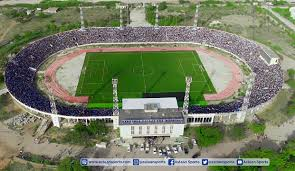Ciyaar dhaqameedka Somalia
Ciyaar dhaqameedka Soomaaliya waa qayb muhiim ah oo ka mid ah hidaha iyo dhaqanka bulshada Soomaaliyeed. Waxaa jira ciyaaro dhaqameedyo badan oo soo jireen ah, kuwaas oo lagu muujiyo farxadda, midnimada, iyo taariikhda dadkeena. Labada ciyaar dhaqameed ee ugu caansan Soomaaliya waa Dhaanto iyo Buraanbur.
1.Dhaanto
Dhaanto waa ciyaar dhaqameed rag iyo dumarba wada qaadaan, waxaana lagu gartaa dhaqdhaqaaqyo iswaafaqsan oo lala raacayo heeso iyo laxamo dhaqameed. Dhaantadu waxay asal ahaan ka timid deegaanka Bari ee Soomaaliya, waxayna noqotay mid si weyn looga yaqaan guud ahaan dalka. Ciyaartan waxaa lagu muujinayaa adkeysi, geesinimo, iyo farxad. Inta badan waxaa lagu ciyaaraa xafladaha, aroosyada, iyo munaasabadaha kale ee dhaqanka.
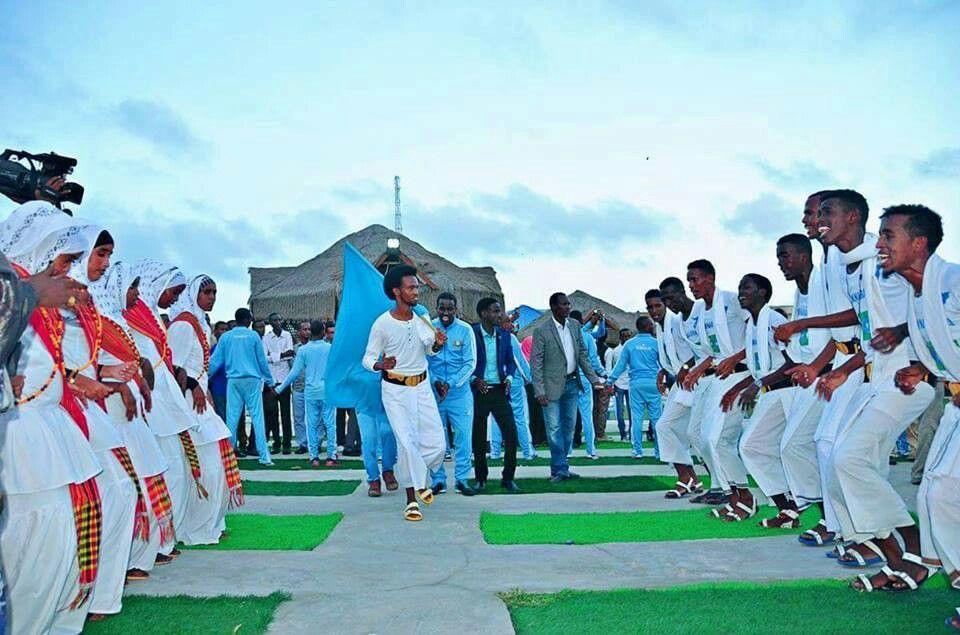2.Buraanbur
Buraanbur waa ciyaar dhaqameed dumar inta badan ku caan baxay, waxaana lagu soo bandhigaa gabayo iyo heeso macaan oo ka tarjumaya dareenka, jacaylka, iyo xaaladaha bulshada. Buraanburku waa hab lagu cabbiro fikradaha iyo dareenka haweenka iyadoo laxanka iyo garaaca dhagxaanta (darbiga) lagu taageerayo. Ciyaartani waxay sidoo kale door muhiim ah ka ciyaartaa xafladaha dhaqanka iyo dabaaldegga.
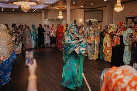Villa Somalia
Madaxtooyada Soomaaliya waa xarunta ugu sareysa ee dalka, waxaana degan madaxweynaha Soomaaliya. Waxay ku taallaa Muqdisho, waxaana loo yaqaanaa Villa Somalia. Waxaa laga maamulaa arrimaha dalka iyo siyaasadda guud, waxaana sidoo kale lagu qaabilaa madaxda iyo martida caalamiga ah ee dalka timaada. Madaxtooyadu waa astaanta madax-bannaanida iyo midnimada shacabka Soomaaliyeed.
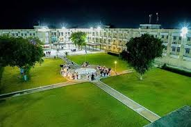Goobaha Dalxiiska ku Haboon Soomaaliya
1. Xeebaha Soomaaliya
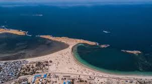- Xeebta Liido (Liido Beach) — Muqdisho: Xeeb dheer oo leh ciid cad iyo biyo nadiif ah, meel ku habboon dabaasha iyo nasashada.
- Xeebaha Berbera — Gobolka Saaxil: Xeebaha quruxda badan oo leh biyo macaan iyo muuqaal badda ah oo aad u fiican.
- Xeebta Eyl — Puntland: Xeebaha dabiiciga ah iyo kalluumaysiga dhaqameed.
2. Buuraleyda iyo Dhulka Sare
-
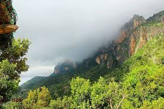
- Buuraleyda Cal Miskaad — Waqooyi-bari Soomaaliya: Buuro dhaadheer oo leh cimilo qabow, geedo iyo duurjoog badan.
- Buuraleyda Golis — Waqooyi-galbeed: Buuraleyda qurux badan oo leh dhul cagaaran iyo dhir kala duwan.
3. Taallooyin Taariikhi ah
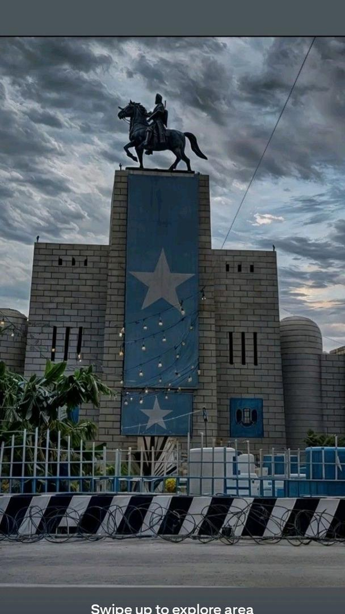- Madxafka Qaranka Soomaaliya — Muqdisho: Xarunta taariikhda iyo dhaqanka Soomaaliyeed.
- Goobaha taariikhiga ah ee Mogadishu — sida Xamar Weyne, taallooyin iyo dhismayaal qadiimi ah.
- Magalada Zeila — Somaliland: Magaalo taariikhi ah oo leh dhismooyin hore iyo xeeb qurux badan.
4. Harooyinka iyo Webiyada
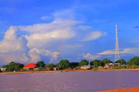- Webiga Jubba iyo Webiga Shabeelle — Biyo-dhaaminta ugu weyn Soomaaliya, halkaas oo laga heli karo muuqaal dabiici ah oo qurux badan.
- Harooyinka Durdurro ee Jubbada Hoose iyo Jubbaland.
5. Dhul Weyn iyo Buuraleyda Baadiyaha
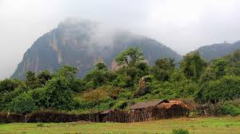- Sanaag iyo Hiraan — deegaanada leh buuraha iyo dooxooyinka quruxda badan.
- Dooxooyinka Dhagax-barkadle — deegaan leh muuqaal dabiici ah oo aad u qurux badan.
6. Goobaha Dalxiiska Dhaqanka
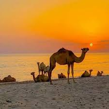- Suqyada Dhaqanka ee Muqdisho iyo magaalooyinka kale, halkaas oo laga heli karo farshaxan, dhar dhaqameed, iyo cuntooyinka soomaalida.
Xuduudaha Soomaaliya
Soomaaliya waxay leedahay xuduudo la leh:
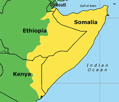- Jabuuti (Waqooyi)
- Itoobiya (Galbeed iyo Koonfur)
- Kenya (Koonfur)
- Badweynta Hindiya (Bari)